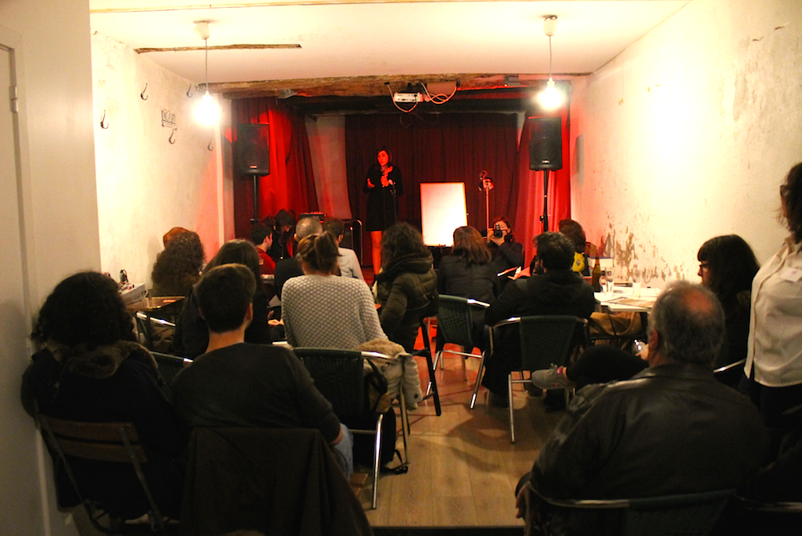
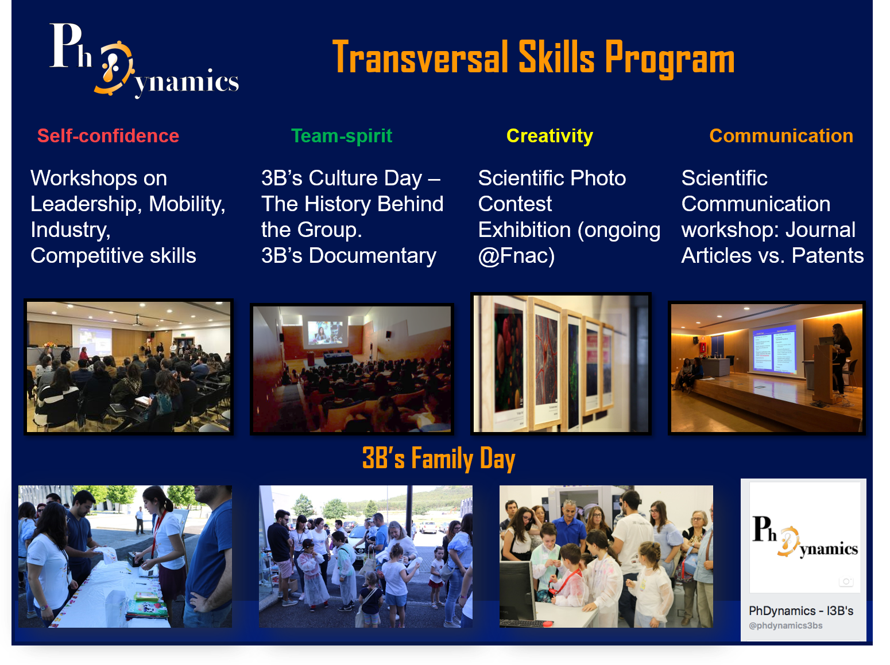

Welcome to my site on the world wide web. I am Bárbara, PhD in Tissue Engineering. I am 29 years-old and was born in Fátima, which is located right in centre region of Portugal.
2020-Present at Nova Medical School. Topics of research: Biomaterials; drug delivery; gene therapy and breast cancer working on the ERC project "Cancer heterogeneity and therapy profiling using bioresponsive nanohydrogels for the delivery of multicolor logic genetic circuits".
2015-2020 at I3Bs research group. Topics of research: Development and characterization of human-based nanocomposite materials. Control over biomolecules spatiotemporal delivery. Modulation of the cellular physical and chemical three-dimensional microenvironment to guide stem cell fate.
My PhD thesis was developed under supervision of Professor Manuela E. Gomes and Doctor Rui M. A. Domingues at I3Bs research group in collaboration with Professor Jason Burdick from University of Pennsylvania. The thesis is entitled “Micro/Nano-structured hydrogels based on platelet lysate for tissue engineering and regeneration”, which you can download here.
The translational of engineered tissue substitutes to clinics still antecipates new development in extracellular matrix heterogeneity biomimicry as well as replacement of animal origin products in cell culture media. In the scope of my PhD, inspired by the mechanisms that promote tissue healing, we proposed the use of intrinsically bioactive materials based on platelet lysate (PL), as a native source of biologically-active and structural proteins, combined with cellulose nanocrystals or hyaluronic acid. By exploiting the intrinsic bioactivity of human PL-based biomaterials, we i) improved its structural integrity and short-term stability; ii) fine-tuned biomolecules sequestering and spatio-temporal release; iii) modulated the physical properties of PL-based scaffolds; iv) controlled its retractile effect upon cell encapsulation while v) preserving PL-derived proteins biological function. Moreover, PL was used as an alternative to fetal bovine serum, which clearly strengthens the clinical translation of the proposed systems.
Opponent/External Examiner/Jury: Prof. Orlando Rojas, Full professor at The University of British Columbia - Vancouver Campus; Dr. Paula Alves, Invited Associate Professor at Nova University of Lisbon and CEO at IBET, Portugal, and Dr. Iva Pashkuleva, Principal Investigator at 3B’s research group, Portugal.
Background: Materials preparation and characterization: mechanical and physicochemical analysis such as rheology, western blot, degradation and swelling behavior. Cell culture and characterization: immunofluorescence, cell viability, proliferation and differentiation analysis. Processing techniques: lyophilization, bioprinting and microfluidics.
My master thesis was developed under supervision of Professor Bruno Sarmento and Professor Domingos Ferreira at Faculty of Pharmacy and INEB research institute. The thesis is entitled “Development and characterization of a co-culture two-dimensional blood-brain barrier for the study of nanoparticle permeation”, which you can download here.
In the scope of my master thesis, I characterized and improved an in vitro blood-brain barrier (BBB) model as a tool to study biological and functional BBB alterations and as a key to assess permeability of anti-cancer drugs. Three specific tasks were developed, namely the establishment of an in vitro BBB model that mimics more properties and characteristics of the in vivo BBB; evaluation of the barrier integrity based on the alterations applied through the in vitro model; finally production and characterization of camptothecin-loaded solid lipid nanoparticles for brain delivery.
Opponent/External Examiner/Jury: Prof. Paulo Costa, Professor at the University of Porto, Portugal
Background: I learned how to work with different techniques to characterize the blood-brain barrier in vitro model, such as flow cytometry, electronic microscopy, permeability assays, immunofluorescence and histochemical techniques. Under Professor Paulo Costa supervision, I learned how to produce and to characterize nanoparticles, namely camptothecin-loaded solid lipid nanoparticles. Specifically, to nanoparticles characterization I performed size, zeta-potential and polydispersion index analysis and encapsulation efficiency. Moreover, I used high phase liquid chromatography to validate a method to quantify drug association efficiency.
The B.Sc. report was focused on the design of a nano drug delivery system for Alzheimer's disease.
During my B.Sc., I had opportunity to work with Professor Carla S. P. Fonseca at CICS-UBI. Her group has been investigate the mechanisms underlying Parkinson's disease. This was my first contact with research experiments and primary cell culture studies.
14. A. Vilaça, R. M. A. Domingues, H. Tiainen, B. B. Mendes, A. Barrantes, R. L. Reis, M. E. Gomes. M. Gómez-Florit. Multifunctional Surfaces for Improving Soft Tissue Integration. 2021. Advanced Healthcare Materials. [link]
13. B. B. Mendes, A. C. Daly, R. L. Reis, R. M. A. Domingues, M. E. Gomes. J. A. Burdick. Injectable hyaluronic acid and platelet lysate-derived granular hydrogels for biomedical applications 2021. Acta Biomaterialia. [link]
12. B. B. Mendes, M. Gómez-Florit, A. C. Araújo, J. Prada, P. Babo, R. M. A. Domingues, R. L. Reis, M. E. Gomes. Intrinsically bioactive cryogels based on platelet lysate nanocomposites for hemostasis applications. 2020. Biomacromolecules. [link]
11. B. B. Mendes, M. Gómez-Florit, H. Osório, A. Vilaça, R. M. A. Domingues, R. L. Reis, M. E. Gomes. Cellulose nanocrystals of variable sulfation degree can sequester specific platelet lysate-derived biomolecules to modulate stem cells response. 2020. Chemical Communications.56, 6882-6885 [link]
10. M. Gómez-Florit, R. M. A. Domingues, S. M. Bakht, B. B. Mendes, R. L. Reis, M. E. Gomes, Chapter 1.3.6. Natural Materials, in Biomaterials Science: An Introduction to Materials in Medicine, Fourth Edition, edited by William Wagner, Shelly Sakiyama-Elbert, Guigen Zhang and Michael Yaszemski, Elsevier, ISBN: 9780128161371, 2020. [link]
9. B. B. Mendes, M. Gómez-Florit, A. G. Hamilton, M. S. Detamore, R. M. A. Domingues, R. L. Reis, M. E. Gomes. Human platelet lysate-based nanocomposite bioink for bioprinting hierarchical fibrillar structures. 2019.Biofabrication. 12 (1), 015012. [link]
8. S. Araújo-Custódio, M. Gómez-Florit, A. R. Tomás, B. B. Mendes, P. S. Babo, S. M. Mithieux, A S. Weiss, R. M. A. Domingues, R. L. Reis, M. E. Gomes. Injectable and magnetic responsive hydrogels with bioinspired ordered structures. 2019. ACS Biomaterials Science & Engineering. 5 (3), 1392-1404. [link]
7. B. B. Mendes, M. Gómez-Florit, R. M. A. Domingues, R. L. Reis, M. E. Gomes. Human-based fibrillar nanocomposite hydrogel as bioinstructive matrices to tune stem cell behavior. 2018. Nanoscale. 10 (36), 17388-17401. [link]
6. T. Pesqueira, R. Costa-Almeida, S. M. Mithieux, P. S. Babo, A. R. Franco, B. B. Mendes, R. M. A. Domingues, P. Freitas, R. L. Reis, M. E. Gomes and A. S. Weiss. Engineering magnetically responsive tropoelastin spongy-like hydrogels for soft tissue regeneration. 2018. Journal of Materials Chemistry B. 6 (7), 1066-1075. [link]
5. B. B. Mendes, M. Gómez-Florit, P. S Babo, R.MA Domingues, R.L Reis, M.E Gomes. Blood derivatives awaken in regenerative medicine strategies to modulate wound healing. 2017. Advanced Drug Delivery Reviews. 129, 376-393. [link]
4. E. Silva, P. S. Babo, R. Costa-Almeida, R. M. A. Domingues, B. B. Mendes, E. Paz, P. P. Freitas, M.T. Rodrigues, P. L. Granja and M. E. Gomes. Multifunctional magnetic-responsive hydrogels to engineer tendon-to-bone interface. 2017. Nanomedicine Nanotechnology Biology and Medicine. 14 (7), 2375-2385. [link]
3. B. Mendes, C. Marques, I. Carvalho, P. Costa, S. Martins, D. Ferreira, B.Sarmento, Influence of glioma cells on a new co-culture in vitro blood brain barrier model for characterization and validation of permeability. 2015. International Journal of Pharmaceutics. 490 (1), 94-101. [link]
2. M. João Gomes, B. Mendes, S. Martins, B. Sarmento, Nanoparticle functionalization for brain targeting drug delivery and diagnostic, in Handbook of Nanoparticles: Synthesis, Functionalization and Surface Treatment, edited by Mahmood Aliofkhazraei, Springer, ISBN 978-3-319-15337-7, 2015. [link]
1. M. João Gomes, B. Mendes, S. Martins, B. Sarmento, Cell-based in vitro models for studying BBB permeability, in Concepts and models for drug permeability studies – Cell and tissue-based in vitro culture models, edited by Bruno Sarmento, Elsevier, ISBN: 978-0-08-100094-6, 2015. [link]
PubhD Uminho - PubhD (from “Pub” + “PhD”). The first event was held in Nottingham on January 22, 2014. In Braga is organized by STOL - Science Through Our Lives. The 10 minutes talks are at a "pub level" followed by an informal discussion of 20 minutes. [Event][Movie]

PhDynamics - Team of PhD students that are responsible for science dissemination and ‘soft’ skills program for the 3B’s research group. [Link]
